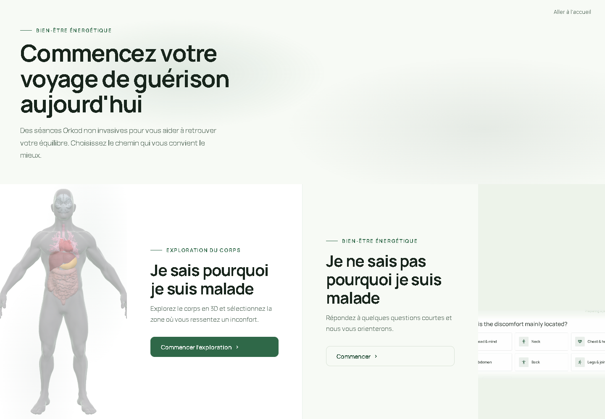
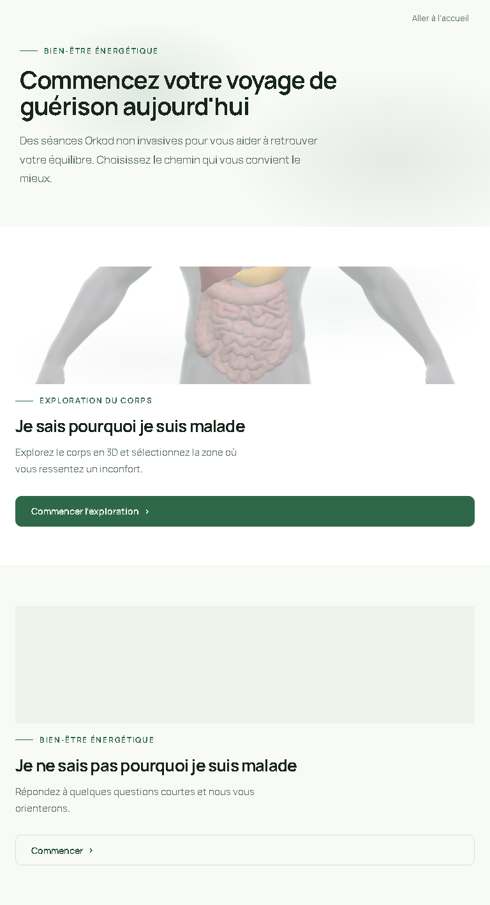
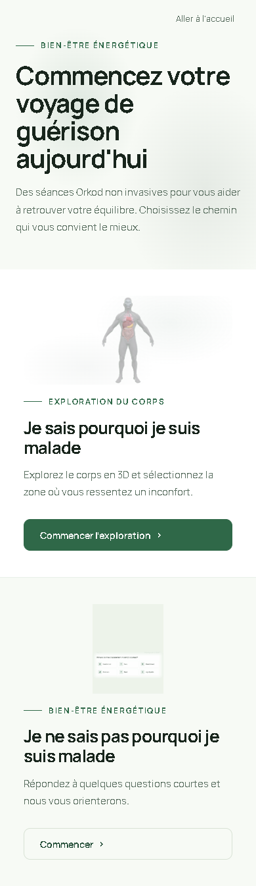
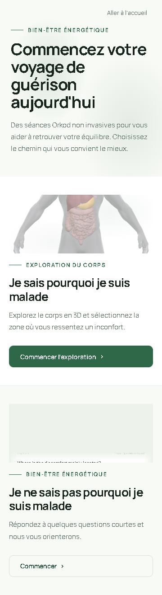

/start — Desktop 1440×900
Two choice cards: "I know where I feel discomfort" → body explorer, "I don't know the cause" → quiz. Nature background supports content. CTAs visible without hover.

/start — Tablet 768×1024
Stacked layout, deliberate mobile proportions.

/start — Mobile 390×844
Stacked choice cards, anatomical preview visible.

/start — Mobile 360×800
Narrow viewport, no horizontal overflow.

/start — Arabic RTL
Mirrored layout, Arabic typography.